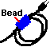
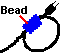

Upgrading DxI Instrument to Integrated Configuration
This procedure describes how to upgrade a DxI instrument to an integrated configuration.
Requirements:
The requirements for upgrading to an integrated configuration are:
- The DxI 800 instrument must have serial number 600781 or above because:
- The instrument base plate has extra mounting holes for the UCTA and cover supports.
- The MCC backplane has extra connectors for the dual-gantry sample pipettor.
- The instrument must be upgraded to Wash Buffer II before proceeding because only Wash Buffer II is used on integrated systems.
- The DxI console PC must have a dual NIC card installed because the dual NIC is used to connect the DxI console PC to the DxC network hub.
- All DTx consoles on Windows XP have the Dual NIC installed.
- All DTx conosles on Windows 8 have the Dual NIC installed.
Note: All DxI 600 instruments can be upgraded.
-
Install a ferrite bead onto the cord of the power outlet strip and, if applicable, onto the UPS cord.
Caution: Only Uninterruptible Power Supply (UPS) model DS3000b requires installation of ferrite beads. No other UPS models require ferrite beads.
-
If the UPS is model DS3000b,
- Obtain the three ferrite beads from the peripherals kit included with the UPS.
- Attach a ferrite bead to the DxI power cord within 2 in of the electrical plug on the DxI instrument, making a single loop of the cord through the bead.

- Attach a ferrite bead to the DxI power cord within 2 in of the electrical plug that attaches to the UPS, making a double loop of the cord through the bead.

- Attach a ferrite bead to the UPS power cord within 2 in of the wall plug, making a single loop of the cord through the bead.

-
If the UPS is model DS3000b,
-
Load system software.
-
Determine current system software revision and load software.
Note: The current software revision can be found at the bottom of the main menu.
Table 67: Windows XP System with System Software 5.2 and Below If Then System software version is the most recent version. - Reload the current software version on the AU only.
Or alternately:
- To load the USB driver: From the AU, select , and then double-click on DPInst.exe. Relaunch the AUObj.
Note: Reloading software on the AU or running DPInst.exe on the AU must be completed because the dual gantry sample pipettor was not installed before the original software load. The encoders on the motors will not work until the USB driver is installed by doing either of these 2 steps.System software version is not the most recent version. Insert the UniCel DxI system software CD into the drive and follow these steps: - Select Next to display the Software License Agreement window.
- Select Yes to continue.
- Enter the IP address 192.168.2.4 at the prompt.
- If prompted for the instrument serial number, then enter the instrument serial number.
- Select OK to update the instrument software.
- Select OK to clear the installation successful message.
- Remove the CD from the drive when the Setup Complete window is displayed.
- Select Yes, I want to restart my computer.
- Select Finish.
- If the Unknown Processes Running window is displayed, select OK.
- Proceed to the next step.
Table 68: Windows 8 System with System Software 5.3.1 and Above If Then System software version is the most recent version. - Reload the current software version.
Or alternately:
- To load the USB driver: From the AU, select , and then double-click on DPInst.exe. Relaunch the AUObj.
Note: Reloading software on the AU or running DPInst.exe on the AU must be completed because the dual gantry sample pipettor was not installed before the original software load. The encoders on the motors will not work until the USB driver is installed by doing either of these 2 steps.System software version is not the most recent version. Insert the UniCel DxI system software CD into the drive and follow these steps: - Press install button to load software. Press the finish button when complete to restart the console and AU.
Note: The software install program should start automatically. It may take up to 3 minutes for the program to launch. If the program doesn't auto launch, it can be manually started by selecting the Computer icon on the desktop and then double clicking on the D: DVD drive.
- If the Unknown Processes Running message occurs after the PC restarts, select
OK to continue.
Note: When rebooting the Privacy & Security compliant Windows 8 or Windows 10 PC, you must enter security password "Access2Admin" when prompted to launch Windows.

- Proceed to the next step.
- Reload the current software version on the AU only.
-
Determine current system software revision and load software.
-
Prepare the instrument for docking to the UCTA.

-
Attach the knock-out template to the right side panel of the instrument.
The knock-out template is included in the upgrade kit.

-
Carefully punch the side panel inward with a small hammer.

-
Push on the sheet metal knockout tab, until it breaks away. Remove and discard the tab and template.

-
Attach the knock-out template to the right side panel of the instrument.
-
Replace the rear cover supports.
Note: The redesigned cover supports attach the UCTA transfer shuttle to the DxI instrument.
-
Remove the rear cover supports from the chassis (two screws and washers each).

-
Attach the replacement cover supports to the chassis using two 1/4-20 x 5/8-in screws and washers each.

1 Right 2 Center 3 Left Note:- The center and right rear cover supports are identical.
- Each cover support has two locating pins to obtain the correct position.
-
Remove the rear cover supports from the chassis (two screws and washers each).
-
Install the rear covers.
-
Attach the rear shuttle panel to the rear cover supports using three 8-32 x 1/4-inch screws (one on each support).


-
Attach the end cap to the lower cover of the transfer shuttle using two 10-32 x 1/2- inch screws.

-
Attach the lower cover of the transfer shuttle to the center and right rear cover supports using two 10-32 x 3/4-inch screws.
Do not tighten the screws, they will be tightened after attaching the top cover to the transfer shuttle.

-
Remove the three brackets from the housing for the dual-gantry pipettor, and attach the brackets to the upper rear cover using six 8-32 x 7/8-inch screws.
The screws are located in a bag taped to the inside the housing.

-
Attach the housing to the upper rear cover.

-
Attach the top cover of the transfer shuttle, and tighten the screws.

-
If the UCTA has been connected to the DxI, close the cover on the UCTA pick-and-place.

-
Attach the rear shuttle panel to the rear cover supports using three 8-32 x 1/4-inch screws (one on each support).